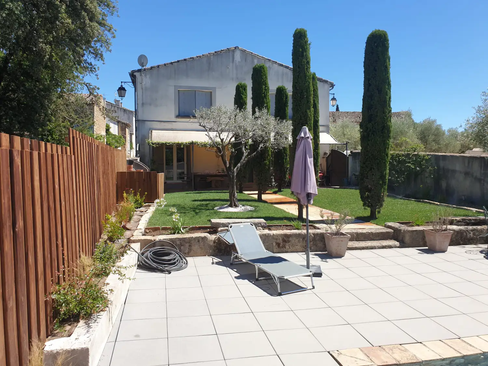

Aménagement minéral
Allées, cours, paillages minéraux, pas japonais en ardoise, béton désactivé, bordures acier.

AccueilEntretien de jardin
Saint-Cyr Services
Tonte, taille, débroussaillage, désherbage, ramassage des feuilles. Les déchets verts repartent dans la remorque. En passages réguliers sur l’année, ou en une seule remise en état.
En quoi ça consiste
Une haie qu’on laisse filer s’évase et se dégarnit du bas ; elle met des saisons à revenir. Une pelouse tondue trop court en juillet grille en une semaine. La mousse gagne les allées bien avant qu’on la remarque, et un seul passage ne rattrape pas ce retard-là.
Deux façons de s’y prendre. Le passage régulier, avec un calendrier calé sur ce qui pousse chez vous : serré au printemps, allégé en plein été et en hiver. Ou la remise en état, en une fois, quand le jardin a été laissé de côté plusieurs mois.
Maison avec jardin, copropriété, résidence, abords d’un local commercial. Seuls le volume et la fréquence changent. On arrive avec le matériel, tondeuse, taille-haie et souffleur compris.

Le détail
Ça dépend du terrain et de la saison. Voilà ce qui revient le plus souvent.
En images
Photos prises sur place. Cliquez pour agrandir.
Questions fréquentes
Ça dépend de ce qu’il y a dans le jardin. Une pelouse en pleine pousse demande une tonte tous les dix à quinze jours au printemps. Beaucoup moins l’été, presque rien l’hiver. Une haie de cyprès tient avec deux tailles par an ; un laurier repart plus vite, il en demande parfois une de plus. On regarde le terrain et on cale un calendrier, quitte à le corriger après la première saison.
Les deux se font. Le contrat fixe à l’avance le nombre de passages et leur répartition sur les saisons. Le ponctuel sert à remettre en état : terrain laissé plusieurs mois, maison qu’on vient d’acheter. Beaucoup de jardins commencent par là, puis passent en entretien régulier.
Ils partent avec nous. Branches, tontes et feuilles sont chargées en fin d’intervention. Le brûlage des déchets verts à l’air libre étant interdit, rien ne se brûle sur place. On souffle les allées et la terrasse avant de partir.
Copropriétés, résidences, abords de locaux commerciaux : mêmes prestations, avec un calendrier posé à l’avance et un seul interlocuteur. Le devis détaille poste par poste ce qui est prévu à chaque passage.
Aller plus loin
L’entretien va souvent avec un chantier de création. Même numéro pour les deux.
Allées, cours, paillages minéraux, pas japonais en ardoise, béton désactivé, bordures acier.

Haies au cordeau, oliviers en nuage, arbres fruitiers, palmiers, taille en hauteur.

Semé, en plaques ou synthétique, avec la préparation de sol et l’arrosage.

Massifs méditerranéens, haies persistantes, potagers. Et le camion-grue pour les gros sujets.

Plages de piscine, terrasses bois ou carrelées, écrans de verdure contre le vis-à-vis.
Le déplacement et le devis ne coûtent rien. Un coup de fil suffit pour savoir si c’est faisable et quand.